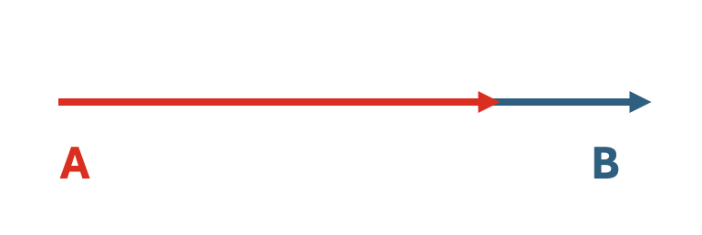
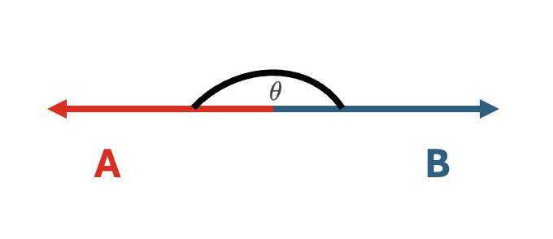
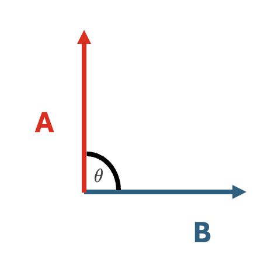
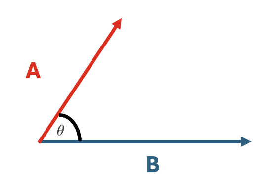
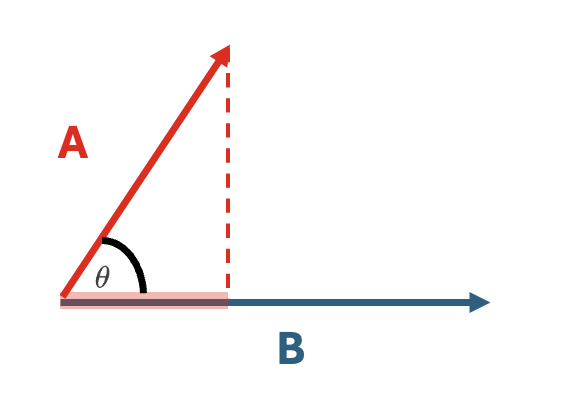

About a month ago, I began exploring different similarity measures. Continuing this quest, I wanted to better understand the relationship between Pearson correlation and cosine similarity.
At first glance, cosine similarity and Pearson correlation seem entirely unrelated beyond their ability to quantify relationships between variables. Indeed, cosine similarity is usually tied to geometry and the Pythagorean theorem, while Pearson correlation is a staple of statistics. However, applying a simple transformation makes these two measures equivalent.
Conceptually, cosine similarity calculates the similarity between two vectors by comparing the angle between them, regardless of their length. To understand this intuitively, let's take three extreme cases:
Case 1:
\(\vec{A}\) and \(\vec{B}\) lie on the exact same line.

Here, the angle between \(\vec{A}\) and \(\vec{B}\) is zero.
So, \(\cos(\theta) = \cos(0) = 1\)
Case 2:
\(\vec{A}\) and \(\vec{B}\) lie on the exact same line, but point in the opposite direction.

Here, the angle between \(\vec{A}\) and \(\vec{B}\) is 180.
So, \(\cos(\theta) = \cos(180) = -1\)
Case 3:
\(\vec{A}\) and \(\vec{B}\) are totally perpendicular.

Here, the angle between \(\vec{A}\) and \(\vec{B}\) is 90.
So, \(\cos(\theta) = \cos(90) = 0\)
As mentioned, these are extreme examples just to gain some sort of an intuition. What if instead we consider two vectors \(\vec{A}\) and \(\vec{B}\) that share some directionality, but do not lie on the exact same line?

The cosine similarity is still the angle \(\theta\) between \(\vec{A}\) and \(\vec{B}\), but perhaps we can operationalize this more carefully. One way to measure how much \(\vec{A}\) points in the direction of \(\vec{B}\) is to "project" \(\vec{A}\) onto \(\vec{B}.\)

The more that \(\vec{A}\) projects onto \(\vec{B}\), the more they point in the same direction. The more they point in the same direction, the more aligned they are, and the greater their cosine similarity. Algebraically, this projection of \(\vec{A}\) onto \(\vec{B}\) is captured by the dot product (measures how much of \(\vec{A}\) lies in the direction of \(\vec{B}\)).
This is expressed as:
\[ \vec{A} \cdot \vec{B} = (\lVert A \rVert \lVert B \rVert)\cos(\theta) \]
Which can be rewritten as: \[ \cos(\theta) = \frac{\vec{A} \cdot \vec{B}}{(\lVert A \rVert \lVert B \rVert)} \]
Giving us the cosine similarity formula while also showing us that cosine similarity is invariant to the magnitude of vectors.
We can rewrite the dot product in terms of its more algebraic definitions:
\[ \vec{A} \cdot \vec{B} = \sum_{i=1}^{n}{a_i}{b_i} \]
\[ \lVert A \rVert = \vec{A} \cdot \vec{A} = \sqrt{\sum_{i=1}^{n}{a_i}{a_i}} = \sqrt{\sum_{i=1}^{n}{a_i}^2} \]
\[ \lVert B \rVert = \vec{B} \cdot \vec{B} = \sqrt{\sum_{i=1}^{n}{b_i}{b_i}} = \sqrt{\sum_{i=1}^{n}{b_i}^2} \]
Taking the original equation, \[ \cos(\theta) = \frac{\vec{A} \cdot \vec{B}}{(\lVert A \rVert \lVert B \rVert)} \]
we can now plug the earlier algebraic equivalences:
\[ \cos(\theta) = \frac{\sum_{i=1}^{n}{a_i}{b_i}}{(\sqrt{\sum_{i=1}^{n}{a_i}^2}) (\sqrt{\sum_{i=1}^{n}{b_i}^2})} \]
Hmmm. This has now begun to look very similar to the Pearson correlation!
Spoiler: Pearson correlation uses mean-centered variables and is written as -
\[ r = \frac{ \sum_{i=1}^{n}(x_i-\bar{x})(y_i-\bar{y}) }{% \sqrt{\sum_{i=1}^{n}(x_i-\bar{x})^2}\sqrt{\sum_{i=1}^{n}(y_i-\bar{y})^2}} \]
So, if we mean-center each of our vectors \(\vec{A}\) and \(\vec{B}\), we arrive at the cosine-similarity equation that is equivalent to Pearson correlation!
\[ \cos(\theta) = \frac{\sum_{i=1}^{n}{(a_i - \bar{a})}{(b_i - \bar{b})}}{(\sqrt{\sum_{i=1}^{n}{(a_i - \bar{a})}^2}) (\sqrt{\sum_{i=1}^{n}{(b_i - \bar{b})}^2})} \]
This works because mean-centering shifts vectors so that their origin is at their mean. Thus, the alignment is measured in terms of deviation from the mean instead of absolute values!
In conclusion, we have now seen that Pearson correlation is cosine similarity computed on mean-centered data. This means that it measures similarity in patterns and not absolute values!